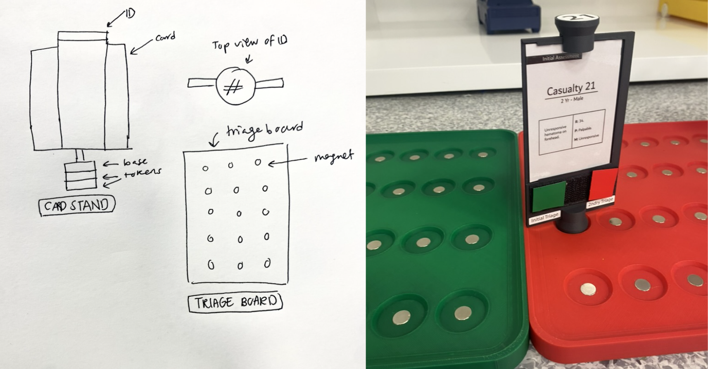

MCIPHER
2025 - Present

Medical Residents during the MCIPHER simulation
MCIPHER project (Mass Casualty Incident – Prehospital Emergency Response), is a collaborative initiative to advance disaster medicine education and prehospital preparedness. One of the main components is a tabletop simulation designed to train medical students in mass casualty triage and disaster response. The platform combines physical simulation components with eye-tracking research tools to study decision-making, cognitive load, and team coordination in high-pressure medical scenarios. I collaborated with product designers, researchers, and doctors to create a fully functioning training and research system, contributing across interaction design, physical prototyping, and experimental research setup.
System Overview
The simulation recreates a disaster triage scenario where medical students must assess patients, prioritize treatment, and coordinate actions as a team.
The system includes:
- Patient triage cards and stands
- A spatial disaster map
- Physical triage boards and ambulances
- Medical Intervention markers and triage stickers
- Eye-tracking and multi-camera recording systems

Physical parts of the simulation that include: triage boards, 25 casualy cards and stands, triage tags, intervention tags, and vehicles.
Role and Impact
- Led the design and development of the physical disaster-response simulation, enabling 20+ medical residents to train in mass casualty triage scenarios, with the system designed for continued use in future training sessions.
- Conducted eye-tracking research and behavioral analysis to study cognitive load, visual attention, and team coordination during triage decision-making.
- Conducted eye-tracking research and behavioral analysis to study cognitive load, visual attention, and team coordination during triage decision-making.
- Established a reusable research and training platform that combines physical simulation with eye-tracking and multi-camera behavioral data collection.
Creating the Physical Simulation Components
- Led the design and development of the physical simulation system, enabling medical students to rapidly assess patient information and coordinate triage decisions in real time.
- Collaborated with a designer to create the patient triage cards and disaster map, optimizing layout, scale, and visual hierarchy to support fast information processing and compatibility with eye-tracking research.
- Co-designed magnetized triage boards and card stand system, allowing patient cards to be securely attached and easily repositioned during simulations.
- Developed intervention icons and Velcro-based tagging system to enable quick marking of medical actions and patient status updates.

Left: Initial sketch of the physical concept, magnetic cards and board. Right: Final version of the design with some changes
Research Instrumentation
Beyond the product design, I led the technical setup used to capture behavioral data during simulations. This included designing and configuring the multi-device recording environment used to study participant behavior.
The system includes:
- Wearable eye-tracking devices for multiple participants
- 360° cameras capturing team interactions
- Multi-angle video recordings of the simulation table
Eye-Tracking Analysis Methodology
I worked on the development of the methodology used to analyze eye-tracking recordings and identify decision-making patterns during the simulations. The analysis focused on gaze patterns and visual attention across the simulation environment.
Key metrics included:
- Gaze frequency and pattern toward the patient cards
- Attention frequency and shifts between different components of the simulation such as teammates and different parts of the map
- Visual focus and attention during critical actions of the simulation
Eye-Tracking example of participants during the MCIPHER simulation
Key Skills
Product Design • Interaction Design • Simulation Design • Product Prototyping • Human Behavior Analysis • Eye Tracking Research • Research Infrastructure